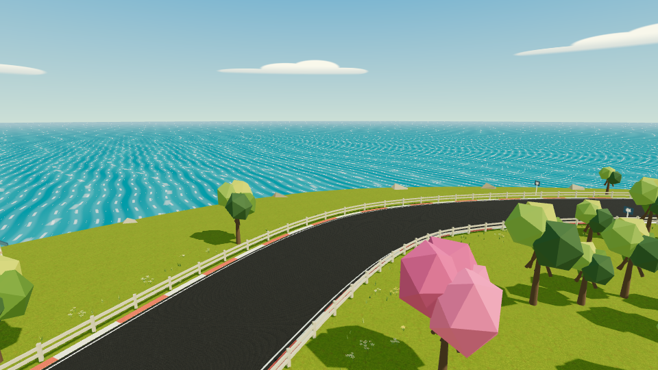
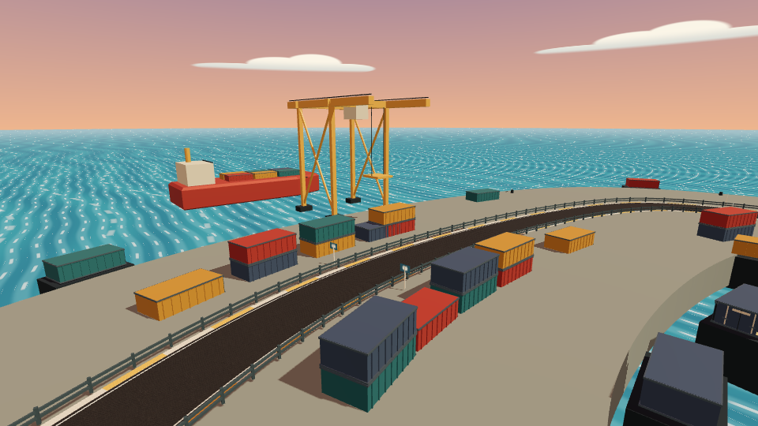
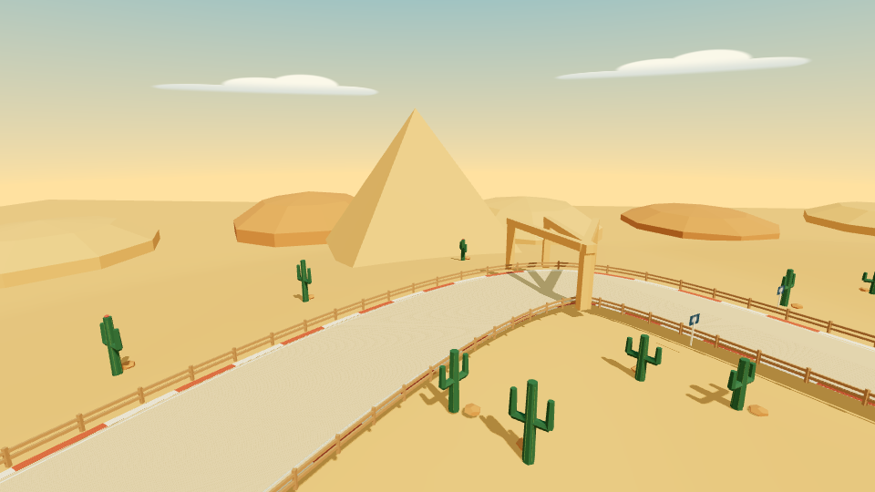
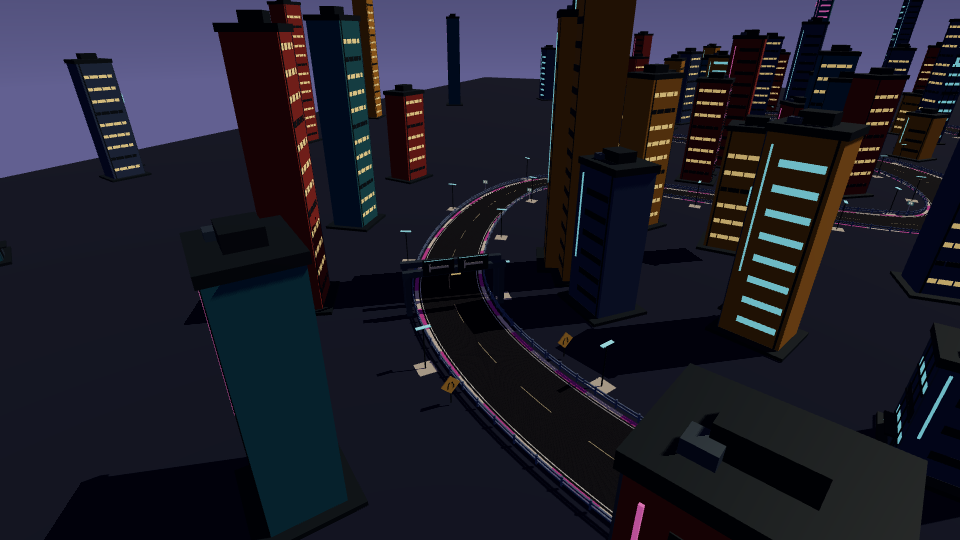
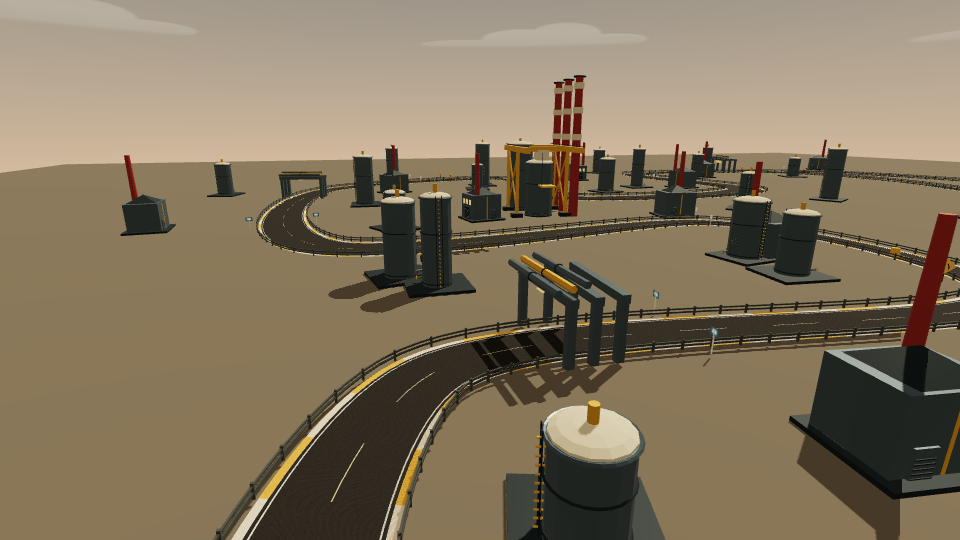
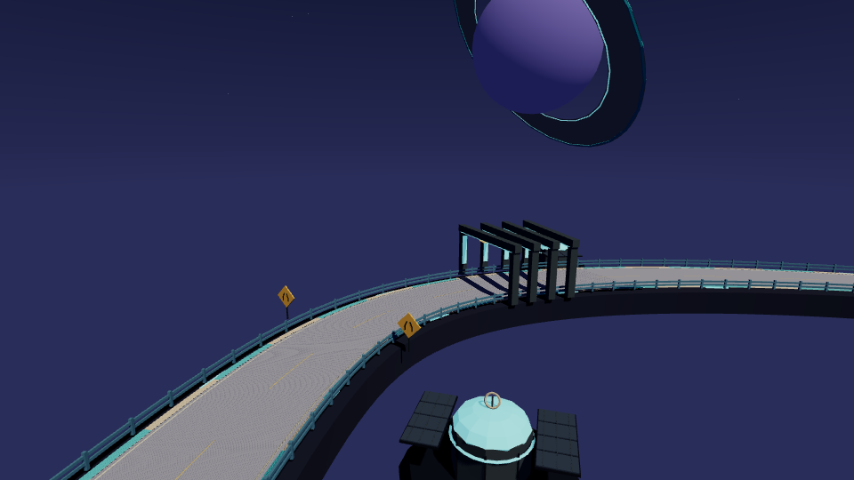
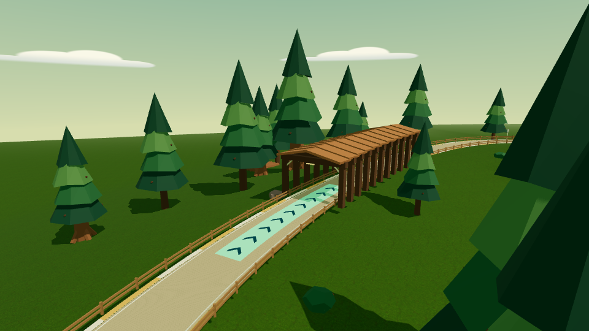
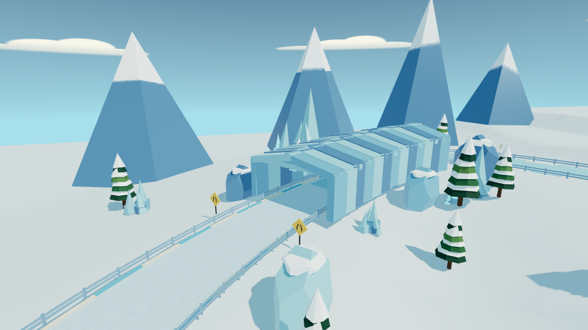
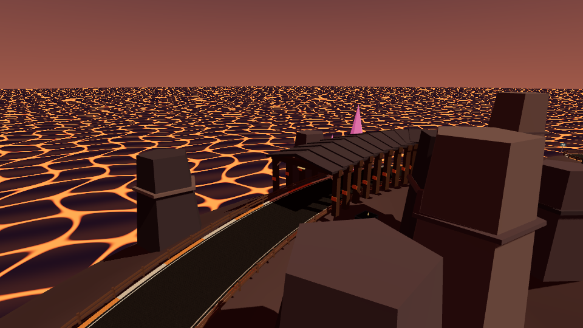

KART CLUB · 九种世界

01 / 晴湾环海
宽弯巡航 · 出弯加速
灯塔与海岸村庄
进入赛道 ↗
02 / 落日货运港
集装箱折返 · 刹车走线
货轮与巨型龙门吊
进入赛道 ↗
03 / 赤金沙漠
遗迹连弯 · 避开沙带
金字塔与砂岩拱门
进入赛道 ↗
04 / 霓虹街区
直角街弯 · 抢占内线
霓虹商街与城市天际线
进入赛道 ↗
05 / 钢铁工厂
管道穿行 · 连续折返
储罐、烟囱与跨路管道
进入赛道 ↗
06 / 星环空间站
悬空弯道 · 连续加速带
环形空间站与巨型行星
进入赛道 ↗
07 / 巨木森林
林间发夹 · 木桥近道
巨杉、木桥与林间营地
进入赛道 ↗
08 / 极光冰川
冰洞九曲 · 提前收油
冰晶隧道与雪山
进入赛道 ↗
09 / 熔岩矿山
矿洞窄路 · 极限控线
水晶矿脉、矿架与熔岩
进入赛道 ↗